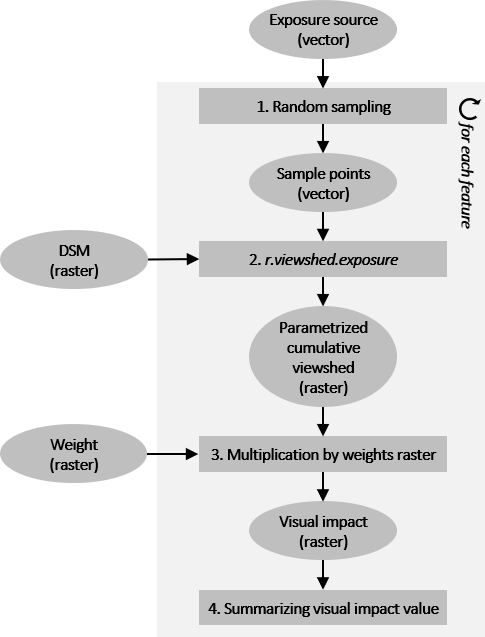
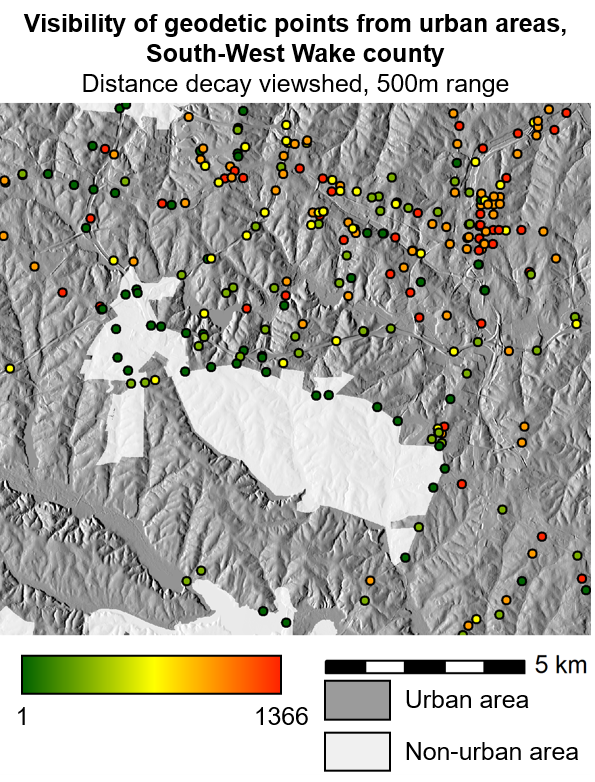
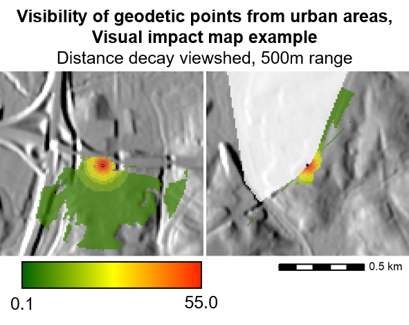

NAME
r.viewshed.impact - Visual impact of defined exposure sourceComputes visual impact of defined exposure source using weighted parametrised viewshed analysis
KEYWORDS
raster, viewshed, line of sight, LOS, exposure, impactSYNOPSIS
r.viewshed.impact
r.viewshed.impact --helpr.viewshed.impact [-crkoa] exposure=name column=string dsm=name [weight=name] [observer_elevation=value] [range_layer=string] [range_column=name] [range=value] [function=name] [b1=value] [sample_density=value] [seed=value] [refraction_coefficient=value] [prefix=string] [memory=value] [cores_e=value] [cores_i=value] [--help] [--verbose] [--quiet] [--ui]
Flags:
- -c
- Consider the curvature of the earth (current ellipsoid)
- -r
- Consider the effect of atmospheric refraction in viewshed modelling
- -k
- Keep intermediate visual impact maps
- -o
- Allow intermediate visual impact maps to overwrite existing files
- -a
- Allow overwriting column storing visual impact values
- --help
- Print usage summary
- --verbose
- Verbose module output
- --quiet
- Quiet module output
- --ui
- Force launching GUI dialog
Parameters:
- exposure=name [required]
- Name of input map of exposure source locations
- Or data source for direct OGR access
- column=string [required]
- Name of attribute column to store visual impact values
- dsm=name [required]
- Name of input digital surface raster map
- Name of input raster map
- weight=name
- Name of input weights raster map
- Name of input raster map
- observer_elevation=value
- Observer elevation above the ground
- 0.0-
- Options: 0.0-
- Default: 1.5
- range_layer=string
- Layer number or name
- Vector features can have category values in different layers. This number determines which layer to use. When used with direct OGR access this is the layer name.
- Default: 1
- range_column=name
- Name of attribute column containing exposure range
- Name of attribute column
- range=value
- Maximum exposure range
- 0.0- , -1 for infinity
- Options: 0.0-
- function=name
- Viewshed parametrisation function
- None, Binary, Distance_decay, Fuzzy_viewshed, Visual_magnitude, Solid_angle
- Options: None, Binary, Distance_decay, Fuzzy_viewshed, Visual_magnitude, Solid_angle
- Default: Distance_decay
- b1=value
- Radius around the observer where clarity is perfect. Used in fuzzy viewshed function.
- Default: 10
- sample_density=value
- Density of sampling points
- 0.0-100.0
- Options: 0.0-100.0
- Default: 25
- seed=value
- Random seed, default [random]
- 0-
- Options: 0-
- refraction_coefficient=value
- Refraction coefficient
- 0.0-1.0
- Options: 0.0-1.0
- Default: 0.14286
- prefix=string
- Prefix for intermediate visual impact maps
- Default: visual_impact_
- memory=value
- Amount of memory to use in MB
- 1-
- Options: 1-
- Default: 500
- cores_e=value
- Number of cores to parallelise r.viewshed.exposure
- 1-
- Options: 1-
- Default: 1
- cores_i=value
- Number of cores to parallelise r.viewshed.impact
- 1-
- Options: 1-
- Default: 1
Table of contents
DESCRIPTION
r.viewshed.impact computes weighted (optional) visual impact of each feature in a given exposure source vector map using parametrised (optional) cumulative viewshed analysis.NOTES
The algorithm
The processing workflow of the module consists of four steps that are repeated iteratively for each feature of the input exposure source vector map within the current computational region:- Random sampling of exposure source with vector points,
- Calculating parametrised (optional) cumulative viewshed from random points using r.viewshed.exposure module,
- Optional multiplication of the (parametrised) cumulative viewshed by weights raster,
- Summarising the pixel values of the resulting visual impact raster and storing the value in the attribute table of the input exposure source map.

Processing workflow
{kind=link}
Processing workflow
1. Random sampling
The processed feature is randomly sampled by vector points in defined sampling density (0-100%; option sample_density). In general, lower sampling densities lead to lower accuracy, higher uncertainty of the result and lower processing time, while higher sampling densities lead to higher accuracy, lower uncertainty of the result and longer processing time.2. Calculating (parametrised) cumulative viewshed
The vector sampling points are then used as input into r.viewshed.exposure module to calculate (parametrised) cumulative viewshed from of the processed feature, using the input digital surface model (option dsm). The height of the processed feature is considered to be 0m above the input digital surface model.The following options are inherited from r.viewshed.exposure module and are thoroughly described in the documentation: observer_elevation, function, b1_distance, refraction_coeff and flags c and r.
The range of visual exposure can be specified either as constant (option range_max) or variable based on attribute value for the processed feature (option range_col).
3. (Optional) multiplication by weights raster
If the option weight is specified, the (parametrised) cumulative viewshed is multiplied by a weight raster map. This allows to account for variable visual impact at different areas or to exclude specific areas from the visual impact computation.4. Summarising the visual impact value
The visual impact of the processed feature is expressed as a sum of pixel values of the (weighted) (parametrised) cumulative viewshed. The resulting value is stored in an attribute table column of the input exposure source map (option column). In addion, the resulting visual impact maps created in step 3. can optionally be kept (flag k).Memory and parallel processing
Option memory specifies the amount of memory allocated for viewshed computation with r.viewshed.exposure. Option cores_e specifies the number of cores used in parallel processing of r.viewshed.exposure. Option cores_i specifies the number of cores used in parallel processing of the iteration over exposure source map features. A general advice is to use smaller number in cores_e and larger number in cores_i in processing a dataset with many small polygons/lines/points and larger number in cores_e in processing a dataset with larger polygons.EXAMPLES
Computation of visibility of geodetic points from urban areas in South-West Wake county, North Carolina. Input data are a terrain model, a vector map of geodetic points (exposure source) and a raster map of urban areas (weights) from NC dataset. Viewshed parametrisation function is set to Distance decay, exposure range is set to 500m.# set computation region to terrain model g.region raster=elevation@PERMANENT # copy vector maps of geodetic points to the current mapset g.copy vector=geodetic_swwake_pts@PERMANENT,geodetic_swwake_pts_local # calculate visibility of geodetic points from urban areas # keep the resulting visual impact maps r.viewshed.impact -k exposure=geodetic_swwake_pts_local column=visibility_urban dsm=elevation@PERMANENT weight=urban@PERMANENT observer_elevation=1.5 range=500 function=Distance_decay sample_density=100 seed=1 prefix=visual_impact_ cores_e=1 cores_i=4

Example of r.viewshed.impact - visibility value
{kind=link}
Example of r.viewshed.impact - visibility value

Example of r.viewshed.impact - visibility impact map
{kind=link}
Example of r.viewshed.impact - visibility impact map
TODO
- Implement variable exposure source height.
KNOWN ISSUES
- Only areas with centroid within the computational region are processed. Areas with centroid outside the computational region are skipped.
REFERENCES
- Cimburova, Z., Blumentrath, S., Barton, D., 2021. PLACE TITLE HERE. Manuscript submitted for publication.
SEE ALSO
r.viewshed, r.viewshed.exposure, r.viewshed.cvaAUTHORS
Zofie Cimburova, NINAStefan Blumentrath, NINA
SOURCE CODE
Available at: r.viewshed.impact source code (history)
Main index | Raster index | Topics index | Keywords index | Graphical index | Full index
© 2003-2021 GRASS Development Team, GRASS GIS 7.8.6 Reference Manual